Mode 1: Current Data
In mode 1 the current diagnostic data can be interrogated. Additionally the readiness code can be displayed (PID1 display field 4).The On Board Diagnostic (OBD) program can be used to check whether individual parameters correspond to actual engine condition.
- Press button -1- to select mode 1, current data.
Display will appear as shown
Module 10* or 1A* will be displayed alternately when:
- Module 10 = Engine Control Module (ECM) -J220-, or
- Module 1A = Transmission Control Module (TCM) -J217- have the same parameter identifications (PID).
Example: Engine Coolant Temperature is measured at the ECM and ATF at the TCM.
The diagnostic data must be individually interrogated via the -> button. Press the Print button to obtain a printout.
The MIL is said to be switched ON when the engine is not idling, and only the ignition is switched ON.
Diagnostic Data:
Relevance of figures in 8 digit number block

Display will appear as shown
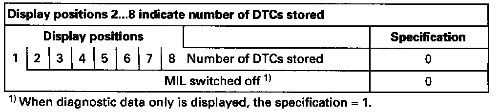
Relevance of figures in 8 digit number block

Display will appear as shown
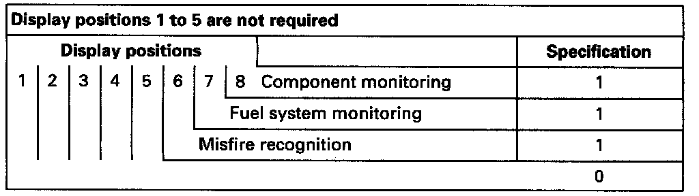
Relevance of figures in 8 digit number block
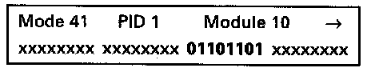
Display will appear as shown
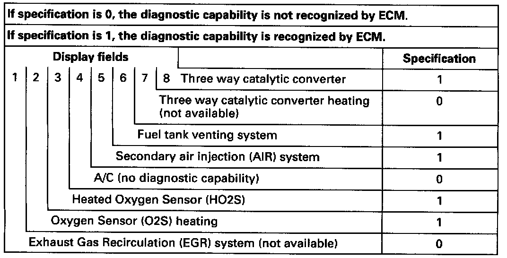
Display will appear as shown
If the specification is not obtained in display field 4 and a 1 is displayed, then the appropriate diagnostic sequence has not yet been performed. The readiness code must still be created. [1][2]Monitors, Trips, Drive Cycles and Readiness Codes
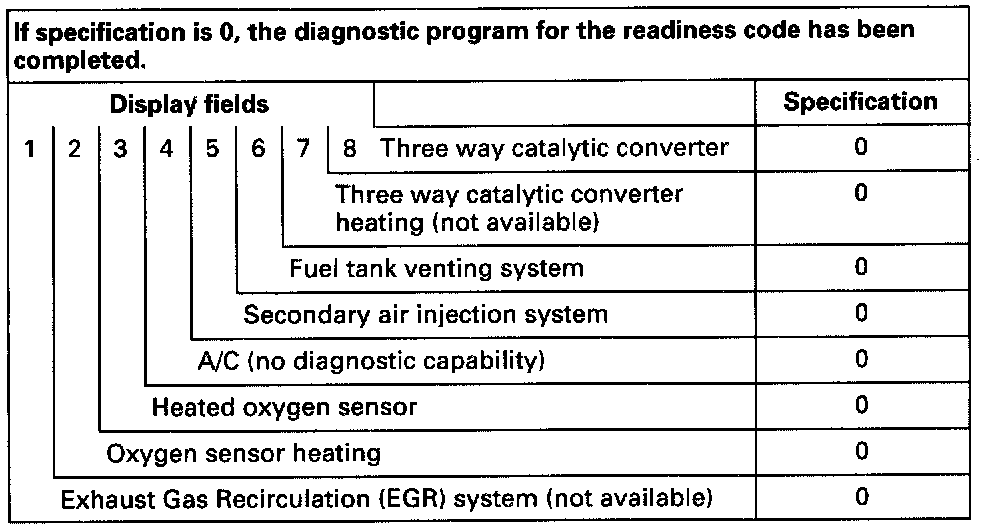
Relevance of figures in 8 digit number block
- Press -> button to display any additional diagnostic data.
PID3: Injection status
When the 4th position from the left is 1, the injection status is recognized as available.
- Press -> button.

PID4: Calculated load value %
Specification at idle approx.: 2%
- Press -> button.

PID5: Engine coolant temperature °C
Indicates the current engine coolant temperature.
Specification for engine at normal operating temperature: 80°C to 105°C (176° to 221°F).
- Press -> button.

PID5: Coolant temperature °C
Indicates the current ATF temperature.
When the ATF specification is above 140°C (284°F) with engine at normal operating temperature, 80° to 105°C (176° to 221°F) a DTC will be stored.
- Press -> button.

PID6: Short term fuel trim, Bank 1 %
The Oxygen sensor control integrator in % is displayed here.
- Press -> button.
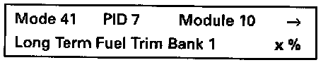
PID7: Long term fuel trim, Bank 1 %
The adaptation increases the value in % depending upon altitude.
- Press -> button.

PID12: Engine speed (RPM)
The engine speed (RPM) is displayed here.
- Press -> button.
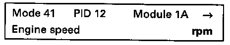
PID12: Engine speed (RPM)
The input speed (RPM) from transmission is displayed here.
- Press -> button.

PID13: Vehicle speed (mph)
Current vehicle speed display.
- Press -> button.
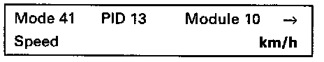
PID13: Vehicle speed (mph)
Current vehicle speed display.
- Press -> button.
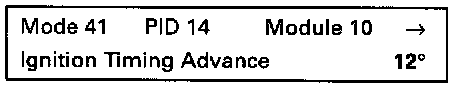
PID14: Ignition timing advance °
Specification at idle: 12° fluctuating.
If the displayed ignition angle is constant, and later than 120 then the cause can be a faulty knock sensor.
- Press -> button.
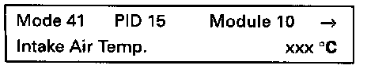
PID15: Intake air temperature °C
Measured at idle, slightly above ambient temperature.
- Press -> button.
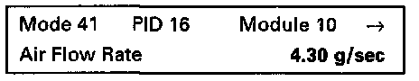
PID16: Mass air flow g/sec
Measured at idle approx.: 4.3 g/sec.
If the value is below 2.5 g/sec. unmetered air can be the cause.
- Press -> button.

PID17: Throttle position %
Specification at idle: 2-4%.
A too large or small a value leads to DTC:P1582.
- Press -> button.
PID18: Secondary air injection status
When the 3rd position from right is 1,the secondary air injection system is recognized as available.
- Press -> button.
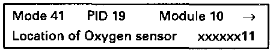
PID19: Location / Heated oxygen sensor
When the 1st and the 2nd position from right is 1, the heated oxygen sensors are recognized as available.
- Press -> button.

PID20: Heated oxygen sensor 1: 0.445 V x%
- The displayed value in volts must fluctuate between 0 and 1.0 volts.
- Press -> button.
PID21: Heated oxygen sensor 2: 0.445 V x%
- The displayed value in volts must fluctuate between 0 and 1.0 volt, however it must be at a slower rate than the HO2S before three way catalytic converter.
- Press -C- button to exit mode 1.